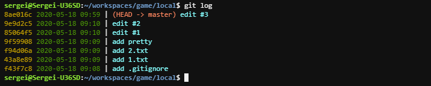

Вернуться -------------------------------------------------------------------------------- # Кастомный вывод (без сохранения в конфиг) -------------------------------------------------------------------------------- # Текущая ветка git log --date=format:'%F %R' --pretty=format:'%C(yellow)%h %C(dim green)%cd%C(reset) |%C(#F78972)%d %C(#9AEDF1)%s' # Все ветки (визуальный) git log --graph --all --date=format:'%F %R' --pretty=format:'%C(yellow)%h %C(dim green)%cd%C(reset) |%C(#F78972)%d %C(#9AEDF1)%s' # Все ветки (без времени и хеш ссылок) git log --graph --all --pretty=format:'%C(bold #000000 #00FF00)%D%C(auto) %s' -------------------------------------------------------------------------------- # Полный -------------------------------------------------------------------------------- # Текущая ветка git log  # Все ветки (визуальный) git log --graph --all # Сохранить в конфиг git config --global format.pretty format:'%C(yellow)%h %C(dim green)%cd%C(reset) |%C(#F78972)%d %C(#9AEDF1)%s' git config --global log.date format-local:'%F %R' # Удалить из конфига git config --global --unset format.pretty git config --global --unset log.date -------------------------------------------------------------------------------- # Сокращенный -------------------------------------------------------------------------------- # Все ветки (визуальный) git l # Все ветки (без времени и хеш ссылок) git ll # Сохранить в конфиг git config --global alias.l 'log --graph --all -15' git config --global alias.ll "log --graph --all -15 --pretty=format:'%C(bold #000000 #00FF00)%D%C(auto) %s'" # Удалить из конфига git config --global --unset alias.l git config --global --unset alias.ll --------------------------------------------------------------------------------